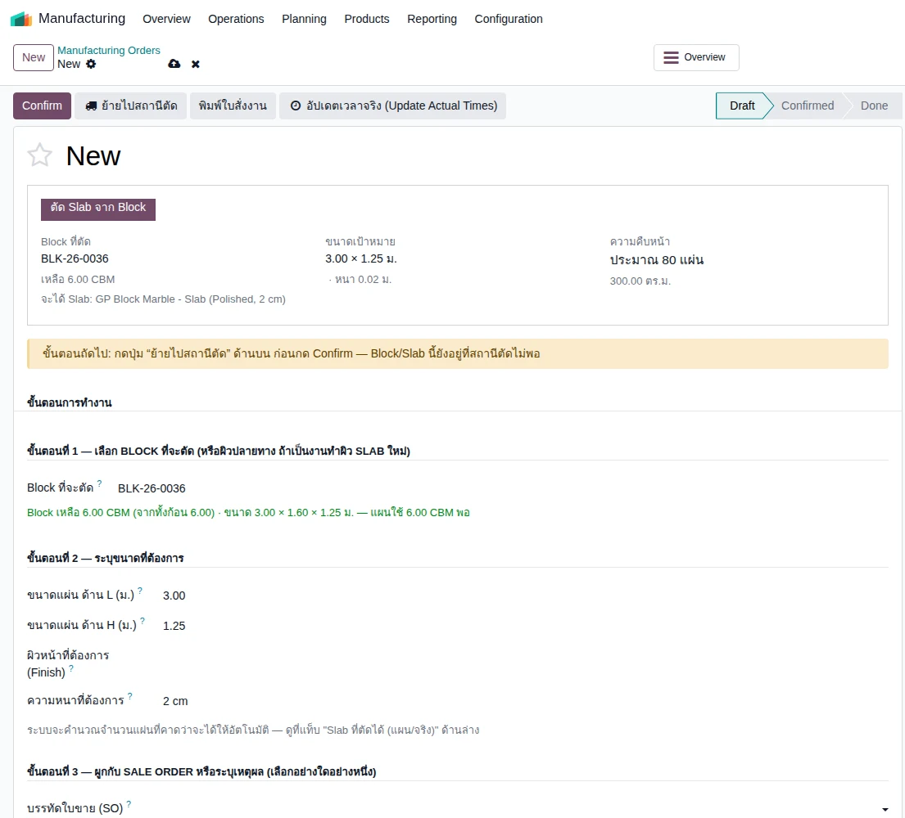
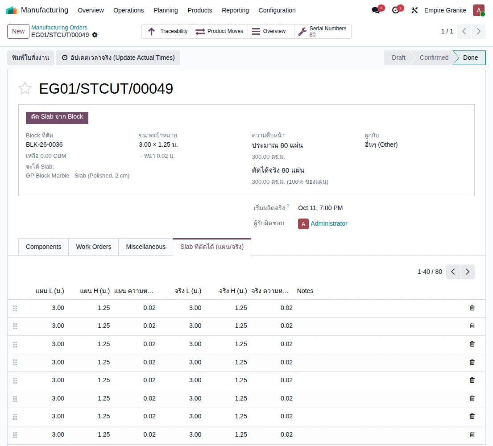
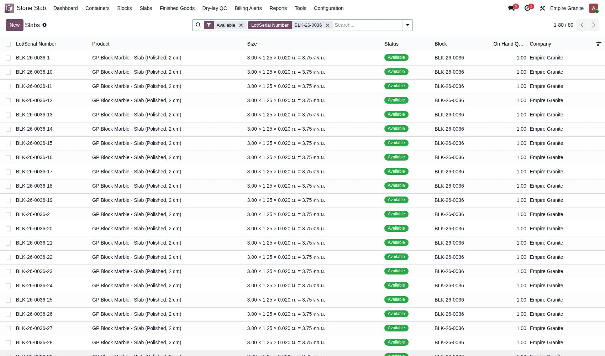
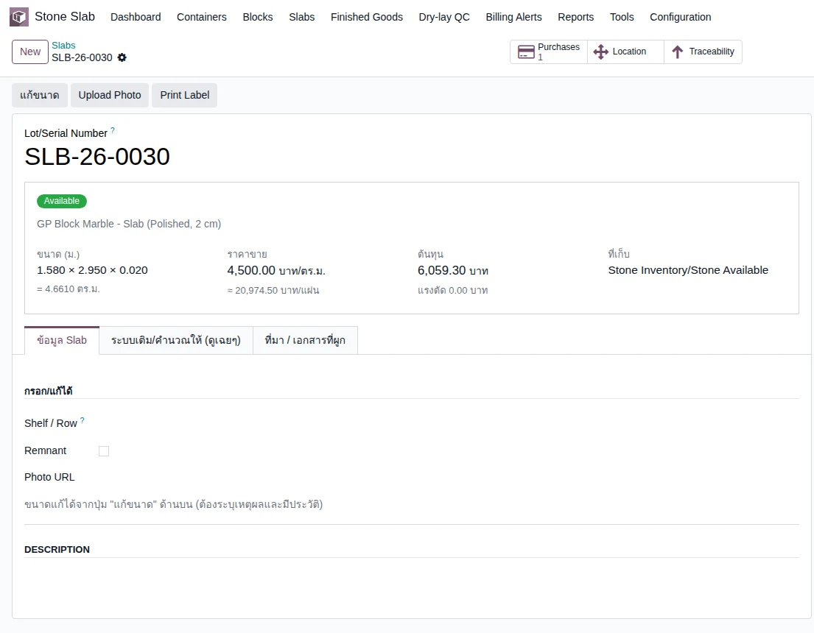

อัปเดตล่าสุด: 25 ตุลาคม 2569 · ตรวจกับระบบ stone_slab_inventory 19.0.2.109.37 · เขียนใหม่ให้ตรงกับระบบที่ Slab เป็น Lot/Serial ของ Odoo (ADR-087) เนื้อหาเต็มและภาพหน้าจอรอบล่าสุดอยู่ที่ บทที่ 31: Slab
เปลี่ยนจากเดิมไม่มีการ "Add Slab Line" ที่ฟอร์ม Block และไม่มี Kanban ตามสถานะแล้ว
บทนี้ฉบับก่อนหน้า (ก่อน 5 ต.ค. 2569) สอนให้เพิ่มแผ่นทีละแผ่นที่แท็บ Slabs ของ Block และลากการ์ดเปลี่ยนสถานะบน Kanban ตอนนี้แผ่นแต่ละแผ่นคือ Lot/Serial ของ Odoo สถานะอ่านจากตำแหน่งในคลัง (เช่น Stone Available = พร้อมขาย) ไม่มีใครพิมพ์สถานะเอง และเมนู Slabs เปิดเป็นรายการ (list) ไม่ใช่ Kanban
แผ่นเข้าคลังได้ 3 ทาง
1ตัดจาก Block (Cut Order) — Manufacturing → Operations → Manufacturing Orders → New เลือก Stone Block แล้วกด ย้ายไปสถานีตัด → Confirm → ตัดเสร็จ ระบบสร้าง Serial ให้ทุกแผ่นและแบ่งต้นทุน Block ตามปริมาตรจริงของแต่ละแผ่น (ดู
บทที่ 31 หัวข้อ 4.1 และ
บทที่ 34)
2ซื้อแผ่นสำเร็จรูป — ใบสั่งซื้อ → ใบรับของ กรอกขนาดจริงทีละแผ่น ระบบตั้งเลข Serial ให้เอง (ดู
บทที่ 31 หัวข้อ 4.3–4.4)
3หินราคาถูกแบบ Lot — ที่ฟอร์ม Block แท็บ Slabs เพิ่มจำนวน/ขนาดที่รับเข้า (ใช้เฉพาะวัสดุที่ตั้งโหมด Lot) สต็อกรวมเป็นก้อนเดียวอัตโนมัติ


ดู Slab ในคลัง
ไปที่ Stone Slab → Slabs → All Slabs แล้วพิมพ์ชื่อ Block ในช่องค้นหา จะเห็นแผ่นแยกเป็นแผ่นละบรรทัด พร้อมขนาด กว้าง × ยาว × หนา และ ตร.ม. คอลัมน์ Block ชี้กลับไปที่ก้อนต้นทาง เมนู Slabs Pending Inspection ใช้ดูแผ่นที่ลูกค้าคืนและรอตรวจก่อนนำกลับไปขาย

คลิกแผ่นใดแผ่นหนึ่งเพื่อเปิดฟอร์ม Lot ของแผ่นนั้น แก้ขนาด รูป และชั้นวางได้ที่นี่ ผู้จัดการสต็อกเท่านั้นที่แก้ขนาดได้ และแก้ไม่ได้ถ้าแผ่นขายหรือใช้ไปแล้ว หรือถูกเลือกอยู่ในใบสั่งขายที่ยังเปิด

หมายเหตุทำไมต้องมี Serial ต่อแผ่น
แผ่นแต่ละแผ่นมีขนาดและต้นทุนของตัวเอง ลูกค้าอาจเลือกแผ่นเฉพาะเจาะจง Serial ทำให้พนักงานสแกนยืนยันตอนส่งของว่าหยิบแผ่นถูกจริง (ดู
บทที่ 06: ส่งของและยืนยันการรับ)
ค่าแรงและต้นทุน
ค่าแรงตัดมาจากเวลาจริงของ Work Order ในใบตัด ไม่ใช่ค่าเหมาต่อ Material แบบฉบับเดิม และต้นทุน Block ถูกแบ่งให้แผ่นตามปริมาตรจริง รายละเอียดและรายการบัญชีดู บทที่ 34: การผลิต (MO) และต้นทุน